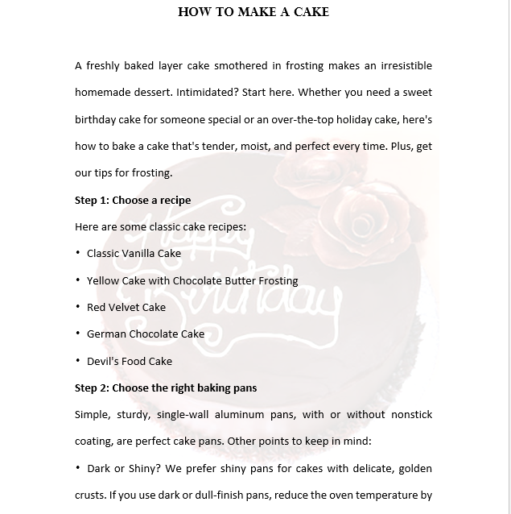

How to Add Text Watermark and Image Watermark in Word with C#
Introduction
This sample aims at demonstrating how to add text watermark and image watermark in Word document via free Spire.Doc for .NET with C#.
Description
Text watermark and image watermark are both watermarks in Word document. In general, the watermark is used to indicate status of a document, like confidential, draft, approved, or display a company logo image. This sample will show how easy you can add text watermark and image watermark in Word with C#. To achieve this, this solution turns to a powerful .NET Word library – Free Spire.Doc for .NET
Before you proceed, you need to download free Spire.Doc for .NET and install it in system. After adding free Spire.Doc dll as a reference to your .NET project assemblies, you’re able to add watermark in Word by using just a few lines of code as below.
How to Add Image Watermark in Word with C#：
Step 1: Initialize a new instance of Document class and load the Word document from file.
Document document = new Document(); document.LoadFromFile (@"E:\Visual Studio\Sample\How to Make a Cake.docx");
Document document = new Document(); document.LoadFromFile (@"E:\Visual Studio\Sample\How to Make a Cake.docx");
Step 2: Load an image from system.
PictureWatermark picture = new PictureWatermark(); picture.Picture = System.Drawing.Image.FromFile (@"C:\Users\Administrator\Pictures\cake.jpg");
PictureWatermark picture = new PictureWatermark(); picture.Picture = System.Drawing.Image.FromFile (@"C:\Users\Administrator\Pictures\cake.jpg");
picture.Scaling = 180;
picture.Scaling = 180;
document.Watermark = picture;
document.Watermark = picture;
Step 5: Save the file.
document.SaveToFile("result.docx");
document.SaveToFile("result.docx");
Effective screenshot:

How to Add Text Watermark in Word with C#：
Adding text watermark is as easy as the solution above. Since Free Spire.Doc for .NET allows us to add and design watermark, we can set the property of text watermark as we want. Here is the core code to add text watermark in Word.
Document document = new Document();
document.LoadFromFile(@"E:\Visual Studio\Sample\How to Make a Cake.docx");
TextWatermark txtWatermark = new TextWatermark();
txtWatermark.Text = "DRAFT";
txtWatermark.FontSize = 100;
txtWatermark.Color = Color.Red;
txtWatermark.Layout = WatermarkLayout.Diagonal;
document.Watermark = txtWatermark;
document.SaveToFile("result.docx");
Document document = new Document(); document.LoadFromFile(@"E:\Visual Studio\Sample\How to Make a Cake.docx"); TextWatermark txtWatermark = new TextWatermark(); txtWatermark.Text = "DRAFT"; txtWatermark.FontSize = 100; txtWatermark.Color = Color.Red; txtWatermark.Layout = WatermarkLayout.Diagonal; document.Watermark = txtWatermark; document.SaveToFile("result.docx");

More Information
The above sample only shows how free Sipre.Doc for .NET can be used to add watermark in Word file. In fact, free Spire.Doc for .NET contains much more incredible features that enable you to perform a wide range of document processing tasks, like creation, conversion and printing. Besides, free Spire.Doc for .NET is a totally independent .NET library to operate word documents, which doesn't need Microsoft Office to be installed on the system.
Please view the full detailed information at:
Website: www.e-iceblue.com
Product Home: Free Spire.Doc for .NET
Download: Free Spire.Doc for .NET
Forum: Free Word Library Forum